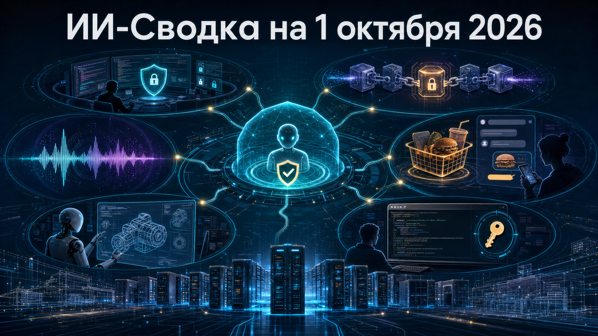

Свежая повестка показывает, как агентный ИИ одновременно становится ближе к повседневным транзакциям и глубже встраивается в профессиональную разработку. В центре дня — контроль доступа к инструментам, надёжность CLI-агентов, капитализация voice AI и инфраструктура для длительных агентных нагрузок.
Общий тренд: конкурентоспособность всё меньше определяется одной моделью. Важнее становятся безопасная выдача разрешений, повторно используемые рабочие процессы, доступ к вычислениям и способность агента работать в прикладной среде.
GitHub выпустил Copilot CLI 1.0.90. В выборе моделей появился GPT-6.1 Sol, а для работы с MCP добавлен флаг --mcp-github-auth: он ограничивает передачу авторизации GitHub только одобренным origin MCP-серверам. Также появились разрешения на доступ к каталогам только для чтения в пределах текущей сессии.
Это важное изменение для команд, где агент ИИ получает доступ к репозиториям и внешним инструментам: защита переносится с уровня общего доверия к среде на уровень конкретных разрешений. Релиз остаётся инкрементальным обновлением, но хорошо показывает, что MCP становится не только механизмом интеграции, но и критичной поверхностью контроля доступа. Подробнее — в релизе GitHub Copilot CLI 1.0.90.
AWS обновила Kiro CLI до версии 2.26.0. В V3 появились opt-in Workflows — повторно используемые сценарии для многошаговых задач, а Classic sessions начали получать подсказки по переходу на terminal UI нового поколения.
Одновременно Kiro усилил проверки одобрений: они охватывают запись файлов через Hooks и LSP, а также MCP-инструменты и shell-команды в недоверенных рабочих пространствах. Для разработчиков это означает переход от разовых промптов к более формализованной автоматизации, но с более строгими границами действий агента. Изменения описаны в changelog Kiro CLI 2.26.0.
DoorDash представила текстового агента ИИ для Apple Messages и открыла лист ожидания для пользователей в США. По описанию компании, пользователь сможет попросить найти подходящее блюдо, повторить привычный заказ или собрать групповой заказ с учётом разных диетических предпочтений.
Это ещё не массовый запуск, а ранний доступ через waitlist, поэтому судить о качестве исполнения и реальном спросе рано. Но сценарий показателен: агентный интерфейс переходит от консультаций к формированию корзины в сервисе с понятной транзакцией и регулярным использованием. О запуске сообщает TechCrunch.
Voice AI-компания ElevenLabs провела тендерное предложение на $300 млн, позволив сотрудникам продать часть уже заработанных долей. По данным TechCrunch, сделка оценивает компанию в $22 млрд — вдвое выше оценки после февральского раунда 2026 года.
Тендер возглавили Wellington и T. Rowe Price; это не новый венчурный раунд, а механизм ликвидности для команды. Тем не менее оценка стала сильным рыночным сигналом для сегмента генеративного голоса, где конкурируют продукты синтеза речи, дубляжа, голосовых агентов и средств защиты от голосовых подделок. Параметры сделки приводит TechCrunch.
Flow Engineering привлекла $50 млн в Series B при оценке $750 млн. По данным TechCrunch, компания создаёт агентов ИИ для инженерного проектирования: они должны связывать CAD-чертежи с требованиями, результатами симуляций и тестов.
Раунд поддержали Valar Equity Partners, Atreides Management и Sequoia Capital; в совет директоров вошёл Roelof Botha. Ставка здесь не на генерацию текста или кода сама по себе, а на сокращение ручной работы при сверке инженерных артефактов — области, где ошибки дорого стоят, а контекст распределён между множеством систем. Детали раунда описаны в материале TechCrunch.
Google выпустила Gemini CLI 0.62.0. Релиз исправляет сохранение OAuth refresh token при обновлении авторизации и делает удаление учётных данных идемпотентным — повторное выполнение операции не должно приводить к дополнительным ошибкам.
Также обновлены отображение MCP tool calls в ACP mode, управление жизненным циклом PTY/ConPTY и расход памяти terminal buffer. Это преимущественно релиз надёжности, а не новая пользовательская функция, но для агентных CLI такие исправления критичны: сбои в авторизации, терминале или инструментальных вызовах способны остановить длинную задачу в середине работы. Полный список изменений доступен в релизе Gemini CLI v0.62.0.
NVIDIA опубликовала материал о совместной инфраструктурной работе с CoreWeave. Компания заявляет, что системы Vera Rubin NVL72 и CPU Vera на платформе CoreWeave должны ускорять агентные нагрузки для заказчиков, включая Cognition.
Это прежде всего продуктовая позиция NVIDIA, а не независимое сравнение производительности. Однако направление существенно: длительные агенты требуют не только мощных ускорителей, но и предсказуемой инфраструктуры от обучения до эксплуатации, чтобы ресурсы можно было перераспределять между поколениями оборудования и рабочими нагрузками. Подробности приводит NVIDIA.